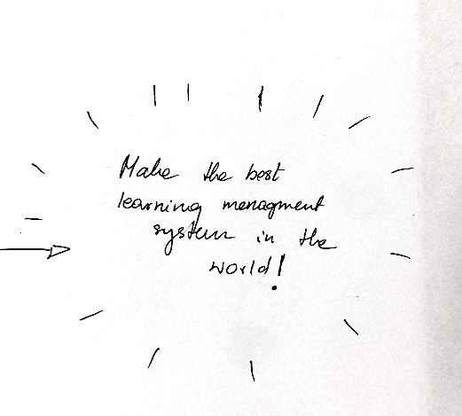

user research
The last theme was something I was looking forward to as I am interested in semiotics, perception and user experience is really close to those matters. I learned to write those kind of test, how to conduct interviews and most importantly how to make pitches, sketches and documentation. I feel like it was week where we really learned how to work in groups.
Although making adjustments to fronter for more then 3 weeks was exhausting and we didn’t have a chance to polish any of our solutions it was a pleasure for me to work on those topics.
The one thing I did not expect in that theme was that I learned how to use CSS and HTML better especially the grid system. I think by this point I understand those two languages. Also was making prototypes in XD and with help of UI kits it was really fast and easy.I think it would be more beneficial if we worked on smaller apps/solutions then fronter as it was sometimes hard to get good results with only part of the solution made. For better or worse having one-two user journeys made user tests really basic.